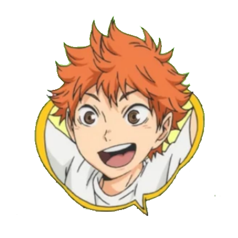

|

|
| Datos Personales |
Shōyō Hinata 日向 翔陽 |
Fecha de nacimiento: 21 de Junio de 1996 |
Nacionalidad: Japon |
>Email: shoyohinata@gmail.com |
teléfono: 070 765 98713 |
| Formación Académica |
Graduado escolar en la Preparatoria Karasuno. |
| Experiencia Laboral |
Jugador profesional de volleyball. |
| Shōyō Hinata es un estudiante de primer año y juega en la posición de bloqueador central. |
Es bajo y sus habilidades en el voleibol no son muy buenas. |
Sin embargo, confía en su capacidad de salto y tiene una enorme agilidad y velocidad.
Con la ayuda de Kageyama, se convierte en un jugador importante y pasa a ser titular en el equipo. |
Quiere llegar a ser tan fuerte como el Pequeño Gigante, el jugador al que admira.